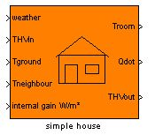
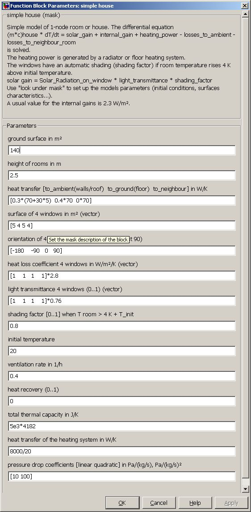

Simple house
Path: CARNOT/loads
Purpose
Simple(and fast) one node / one zone model of a house
with an integrated heating system. A neighbour building may be modelled by
using the same block or just as a constant temperature zone.
Description
The mathematical description of the house is the differential equation:
(m*cp)house * dThouse / dt = (UA)wall,roof * (Tamb - Thouse) + (UA)ground (Tground - Thouse) + (UA)neighbour (Tneighbour - Thouse)
+ shading * [ Gwindow1*Awindow1*Iglb,window1 + Gwindow2*Awindow2*Iglb,window2
+ Gwindow3*Awindow3*Iglb,window3 + Gwindow4*Awindow4*Iglb,window4 ]
+ (1 - eta) * Vhouse * nair * (Tamb - Thouse)
+ InternalGain * Aground + Qdotheatingsystem
The windows have an automatic shading (shading factor) if room temperature rises 4 K above initial temperature.
solar gain = Solar_Radiation_on_window * light_transmittance * shading_factor
The heating system is modelled by the equation:
(m*c)heating_system dT/dt = (massflow*cp)in(Tin- T) + UAheating_system * (Troom - T)
The heating system has a quadratic pressure drop characteristic:
dp = LINEAR * mdot + QUADRATIC*mdot2
Input:
Output:
Parameters and Dialog Box

Characteristics
Direct Feedthrough Yes
Sample
time
Inherited
from driving block
States
2
(one for the room, one for the radiator)
Vectorized
No